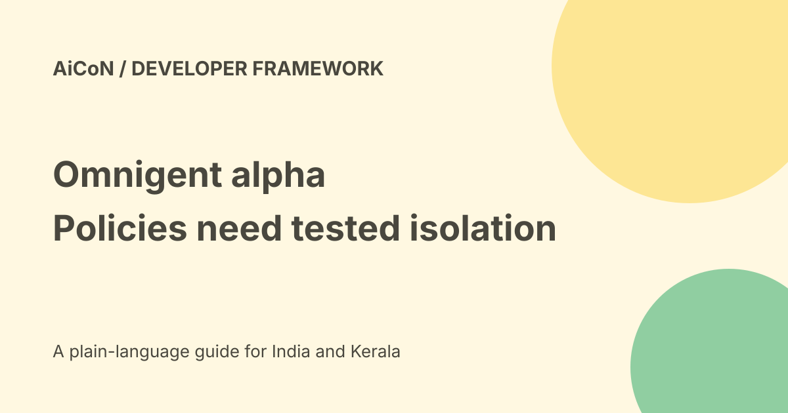

Omnigent: alpha framework, sandbox differences and costs
Omnigent is an open-source framework that wraps several coding agents in a common interface with policies and shared sessions. Its official FAQ explicitly says it is alpha and not ready for production. Free Apache-licensed software does not make the connected models, cloud hosts or unrestricted agent actions free or safe.

What a meta-harness means
A harness is the environment around an agent: how it runs, uses tools and records work. Omnigent describes a common layer over several such environments.
The current repository names Claude Code, Codex, Cursor, Pi and other integrations, plus custom agents. An integration name is not a promise that every feature works identically on every operating system.
Policies are more than prompt wording
The project describes stateful spending limits, model routing and approval rules applied around agent actions. These can pause or block work at a control layer.
Validate the rules in your chosen setup. A written instruction to avoid a directory is different from a tested rule that denies access to it.
Linux and macOS isolation
The repository says its native terminal wrappers use bubblewrap on Linux and seatbelt on macOS. Linux terminal isolation requires the bubblewrap binary.
A sandbox still needs the right mounts, network rules and credential handling. Do not treat marketing wording about unrestricted mode as proof that every action becomes safe.
Windows has a major boundary
The current README describes native Windows support in a degraded mode. Supported SDK agents and the web server can run using a Windows Job Object for process containment.
The README says this does not isolate filesystem or network access. The native terminal wrappers and Linux/macOS filesystem/network sandbox features are not available there. That difference matters before using real files or credentials.
Costs and licence
The repository licence is Apache 2.0. Its code is open source, but you bring model API access, subscriptions or a supported gateway.
Cloud sandboxes, servers, storage and network use may have separate provider charges. No complete all-in INR price or unlimited free hosted plan was verified.
Alpha is not a production stamp
The FAQ says to expect rough edges and explicitly answers no to production readiness. That should guide the trial scope.
Start with a disposable project and non-sensitive data. Do not replace an organisation's established production access controls simply because the tool offers policy examples.
A cautious developer evaluation
- Read the current repository and licence.
- Check Python, operating-system and integration requirements.
- Inspect the installer rather than blindly running a remote script.
- Use a disposable test project and approved model access.
- Confirm which isolation backend is actually active.
- Deny sensitive files and unneeded network destinations.
- Test spending limits and approval failures.
- Review logs and generated changes before merging.
- Stop the test if isolation or permissions are unclear.
No installer, server, model credential or agent session was run for this guide.
Examples and review
The repository includes examples such as Polly for coordinating coding work and Debby for comparing model answers.
More than one model agreeing does not establish correctness. Inspect code differences, run tests and use an independent review where the change matters.
Shared sessions change the audience
The project describes sharing live sessions with history so teammates can review and steer work. That can expose prompts, files, terminals and outputs.
Check who can access the session, what they can change and whether the content is approved for them. A convenient session link does not create permission to disclose a private repository or customer record.
Cloud hosting and India
The repository lists several cloud and local deployment options. A supported provider does not automatically establish an Indian region, a compliant contract or safe default network access.
Verify provider location, authentication, retention and costs for the exact setup. No India payment checkout, Malayalam output or production deployment was tested.
Credential handling
The project describes hiding and brokering credentials in supported flows. Check which credentials are inherited from the environment and which are exposed to a process.
Do not paste long-lived keys into a shared session or store them in the project. Test that denied secret access really fails before adding valuable credentials.
What changed since the original post?
We add the official not-production-ready status, distinguish Windows process containment from filesystem/network isolation and remove any implication that unrestricted operation is risk-free. Star counts are not used as a security measure.
Frequently asked questions
Is it ready for production?
The official FAQ says no.
Do all systems have the same sandbox?
No. Windows has different and narrower isolation.
Are models included free?
You supply the relevant model access and cover its costs.
Sources: Official product page · Official FAQ and alpha status · Current repository README · Apache licence. Checked 7 October 2026.